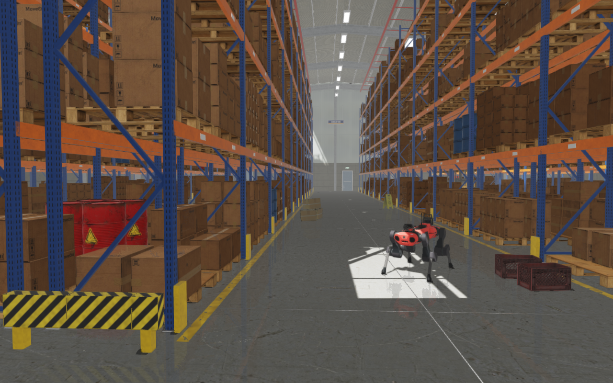
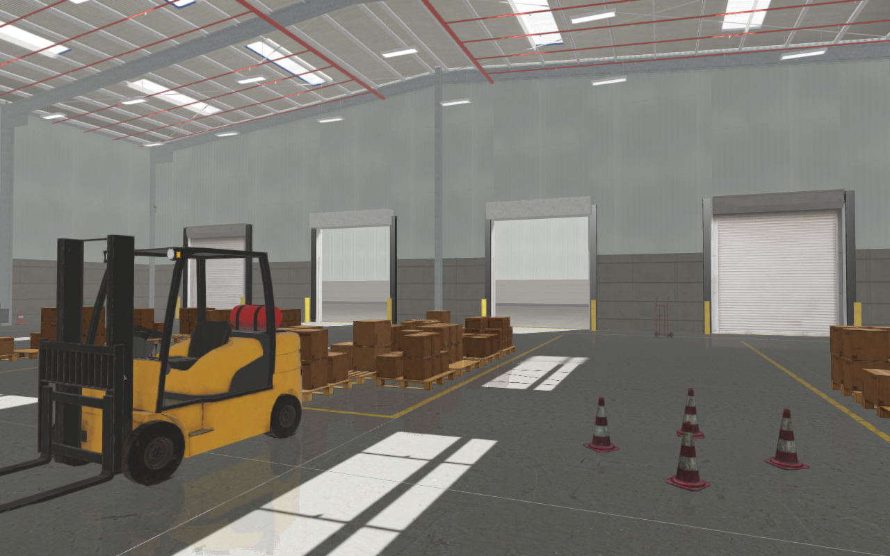
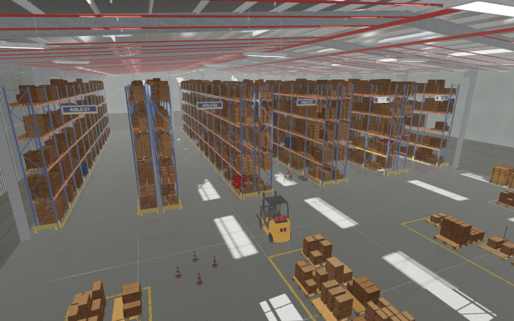

Rayrai Example: Warehouse


Overview
A photoreal warehouse of 1,200 pallet positions, built from free assets and
generated geometry and stored as a RaiSim Engine scene,
rsc/warehouse/rayrai_warehouse.rscene. An ANYmal C quadruped stands in the
middle aisle, held by joint PD control, next to a few loose crates. The
example is short:
auto world = std::make_shared<raisim::World>(
exampleRscPath(argv[0], "warehouse/rayrai_warehouse.rscene"));
// The .rscene reader creates no articulated systems, so the robot is added here.
addStandingAnymal(*world, exampleRscPath(argv[0], "anymal_c/urdf/anymal.urdf"));
raisin::RayraiWindow viewer(world, 1280, 800);
viewer.setAsyncMeshLoadingEnabled(true);
raisin::applyRscene(*world->getRscene(), viewer);
raisim::World(path) creates the ground and 508 hidden box colliders (walls,
columns, rack frames and beams, the loads on the floor and the vehicles), 16
.rasset props (fire extinguishers, propane tanks, shelves, a hand truck, a
packing desk and a tool cart) and 12 dynamic props: cartons, crates, a
wet-floor sign and traffic cones. raisin::applyRscene applies the HDR sky
seen through the open dock doors, the sun, eight area lights, the render
settings, 10 instanced batches with 12,835 pallets, cartons and drums, the
baked building, racking, fixture and yard meshes, two forklifts, a pallet
jack, the closed roller doors and the aisle camera.


Target
CMake target: rayrai_warehouse (C++20). Source:
examples/src/rayrai/worlds/rayrai_warehouse.cpp. Like
Rayrai Example: City, it needs the .rscene support of raisim::World and
rayrai/RsceneVisuals.hpp; CMake skips the target when the installed rayrai
lacks it.
Run
./build-examples/examples/rayrai_warehouse
./build-examples/examples/rayrai_warehouse --screenshot warehouse.png
./build-examples/examples/rayrai_warehouse --scene /path/to/rayrai_warehouse.rscene
The example finds the scene in the rsc folder that CMake copies next to
the executables. --scene loads another file, for example the checkout’s
rsc/warehouse/rayrai_warehouse.rscene after regenerating it.
--screenshot renders in a hidden window without vsync, waits for the
assets, lets the robot and the loose props settle for 90 frames, prints the
average frame time of those frames, saves the image and exits. Physics runs
eight 2 ms steps per rendered frame once the meshes are loaded; the world
loads in about 90 ms and a step takes about 0.1 ms. On an RTX 2070 SUPER at
1280 × 800 with 4× MSAA a frame of the default view takes about 13 ms.
The scene
Building. A 60 m × 36 m steel portal-frame hall, 10 m to the eaves, with precast concrete panels below corrugated metal cladding, I-section columns and rafters, purlins, wind bracing and a pitched roof with 32 skylights. Four dock doors open the east wall; two are open to a sunlit asphalt yard and a neighbouring building, two are closed roller shutters. Steel doors with emergency exit signs lead out of the west wall.
Racking. Ten lines of selective pallet racking, single lines along the long walls and four back-to-back pairs, with 4.6 m aisles. Each line has 12 bays of 2.7 m and four beam levels up to 7.2 m: blue slotted uprights with diagonal bracing and base plates, orange beams with location labels, yellow upright protectors and hazard-striped end barriers, and a hanging sign over both ends of each aisle.
Loads. Two pallets per bay and level, on the floor and on the beams. Most hold stacks of cartons from one of six carton models, scaled by 1.25 to 1.6, with picked cartons missing from the top layer; a few hold steel drums, and 12 % of the positions are empty. Each load gets its own shade through the instanced batches’ colour weights. The dock area has staging lanes in front of the doors, stacks of empty pallets, a bay for hazardous goods, spare propane tanks for the forklifts, shelves and a packing desk.
Floor and ceiling. Worn concrete with saw-cut joints, yellow aisle and lane markings that wear through to the concrete, a walkway line and hazard strips at the door thresholds. Under the roof hang 84 linear LED high-bays and a red sprinkler system of mains and branch lines.
Lighting. The building is closed, so the sun, a shadowed directional light, enters only through the skylights and the open doors. One long area light over each aisle and three over the dock area stand in for the high-bays, whose emissive diffusers show where the light comes from. A low ambient term and a dim, warm image-based fill light the faces the area lights miss, and a light haze adds depth to the 35 m aisles. The sky is the city example’s sun-clamped HDR, seen only through the open doors.


Assets
Poly Haven provides the props (roller shutter, hand truck, cardboard box,
drums, fire extinguisher, plastic crate, propane tank, wet-floor sign, steel
shelves, security camera, metal desk and tool cart) and the floor, wall and
roof textures (CC0). The forklift (louis-muir), the pallet jack (Berk Gedik),
the pallets (Erroratten) and the cartons (NotAnotherApocalypticCo.) are
Sketchfab models under CC BY 4.0, credited in
rsc/warehouse/ATTRIBUTION.md. The sky, the yard asphalt and the traffic
cones are the city example’s files in rsc/city. The racking, the building
and its fixtures, the floor markings and the sign, paint and stripe textures
are generated. The prepared assets occupy about 60 MiB; mesh LOD caches that
rayrai writes beside them are ignored by Git.
Three standard-library Python scripts (preparation also needs NumPy, SciPy and Pillow) rebuild everything:
python3 examples/tools/download_warehouse_assets.py /tmp/warehouse
python3 examples/tools/prepare_warehouse_assets.py /tmp/warehouse rsc/warehouse
python3 examples/tools/generate_warehouse_rscene.py rsc/warehouse # layout only
The Sketchfab downloads need the API token of a free account
(https://sketchfab.com/settings/password) in SKETCHFAB_API_TOKEN or
~/.sketchfab_api_token; Poly Haven needs none. Preparation bakes every
model into a Z-up glTF file in metres, with one primitive per material, so
that RaiSim reads a dynamic prop’s convex hull from the same file rayrai
draws. The generator lays out the warehouse with a fixed seed and writes the
scene and the building, racking, fixture and yard meshes; their large faces
are split into 3 m cells, because rayrai v2.8.0 drops cascade shadows near the
camera on large receiver triangles that reach behind it.
See .rscene File for the format, Rayrai Example: City for the city whose files the warehouse reuses, and Rayrai Example: Forest for the LOD cache and asynchronous loading.